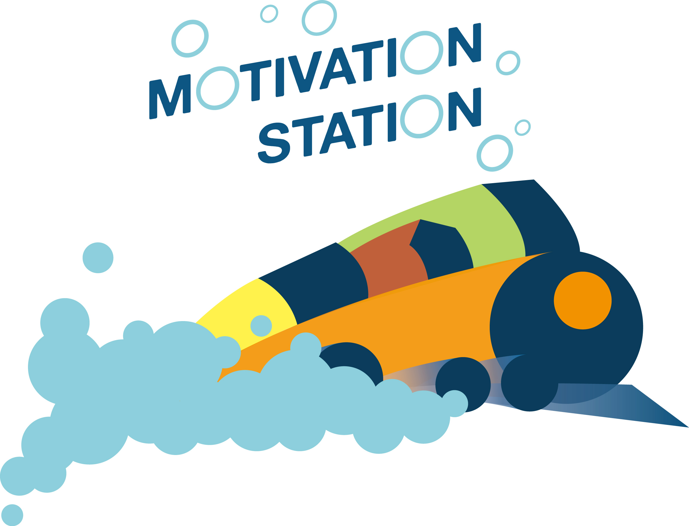
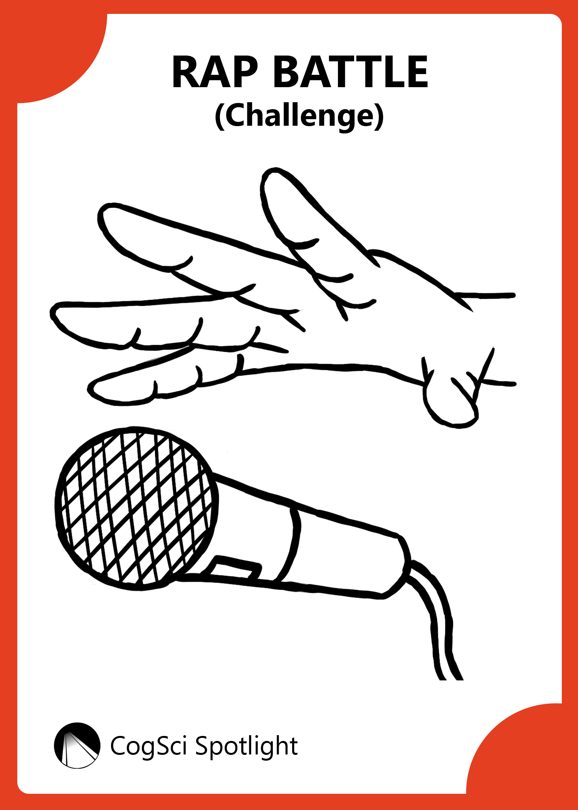
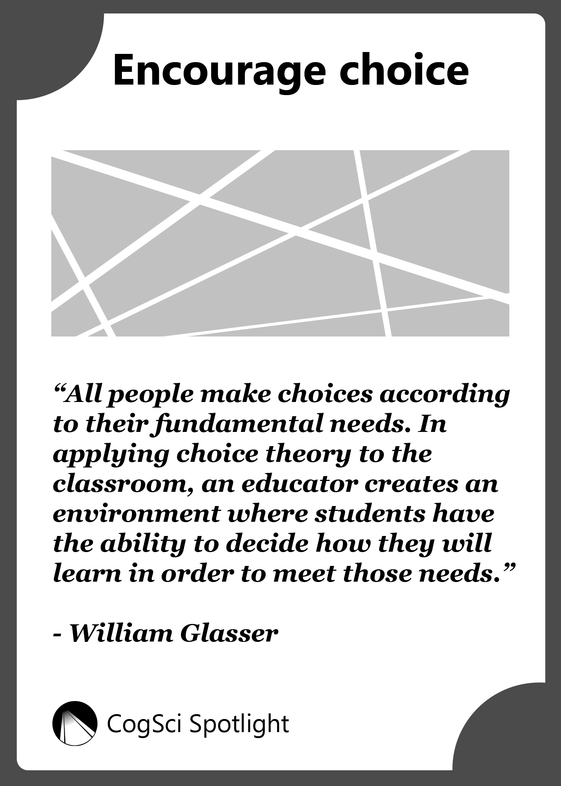
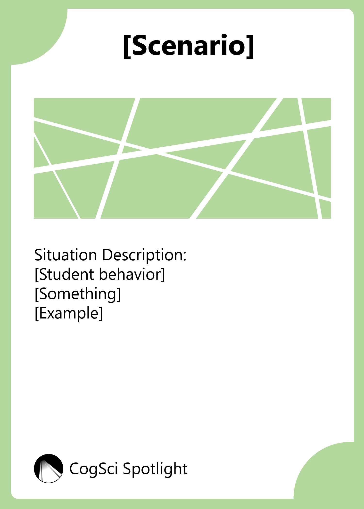
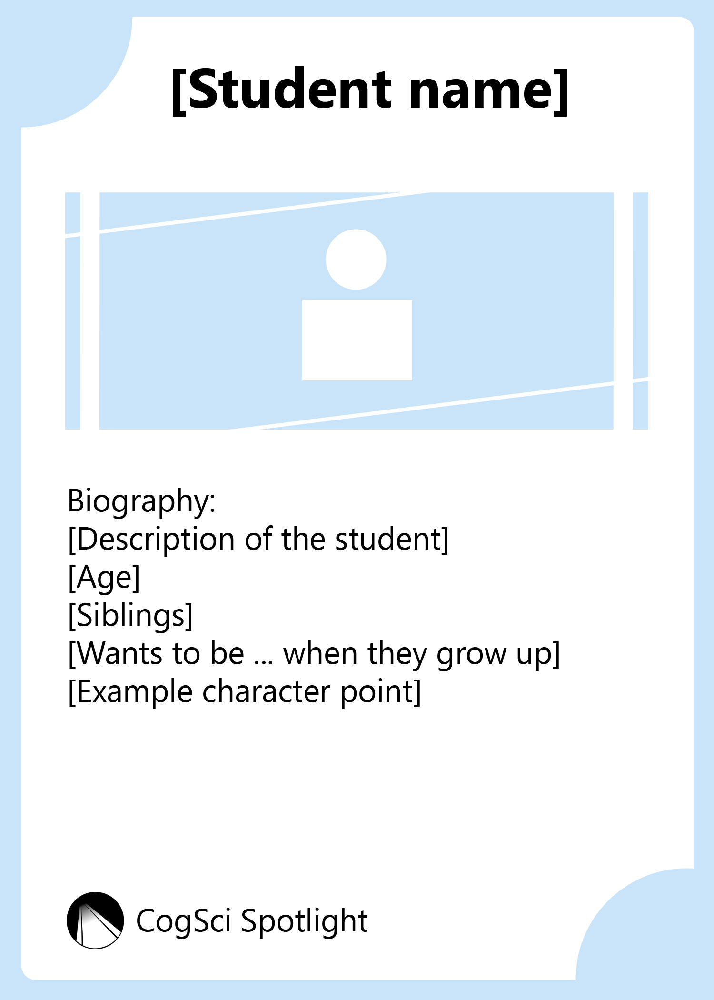

Research (UROP) - Teaching Systems Lab
June to December 2016
I have worked on numerous projects from the Teaching System Lab (TSL) and their partner foundation, the Woodrow Wilson Academy. I assisted the TSL in designing student-centered learning experiences. I worked on learning materials and games. This included: producing graphical and functional designs, visualizing instructional graphics, play-testing, conducting user-testing on potential users, and revising the materials accordingly.
Motivation Station - Cognitive Science Cards
The game is designed to apply cognitive science principles to unique teacher-student situations. The intentions were to have people act out the scenario written on the selected Principle, Scenario, and Student cards. It was originally named "CogSci Spotlight" and was then rebranded as "Motivation Station". I created a version of the first iteration of the card designs and made the new logo for the rebranding.
   